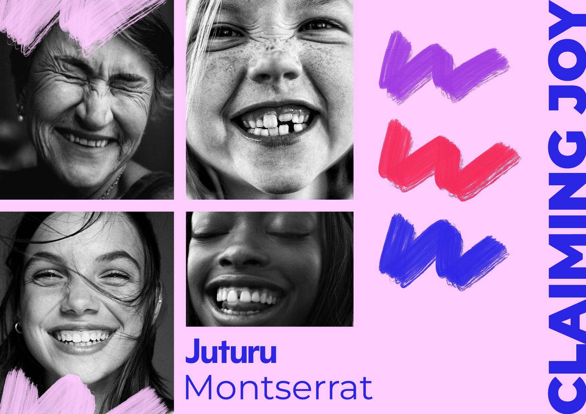

Mein Projekt «Claiming Joy» behandelt die Emotion der Freude und den Aspekt des Feminismus. Dazu fotografiere ich verschiedene Frauen aus meinem Umfeld bei herzhaftem Lachen.
Die Perspektive der Fotos ist nah gewählt, weshalb ich mich für Porträts entschieden habe. Die Fotografien werde ich Schwarz-Weiss bearbeiten, um Ruhe zu erzeugen, und dadurch zwischen den knalligen Farben meines Projekts aufzufallen. Zudem hilft mir das Schwarz-Weiss dabei, unterschiedliche Lichtverhältnisse auszugleichen. Ich werde alle Fotografien mit denselben Einstellungen bearbeiten, damit eine klare Einheit entsteht. Manche Fotografien sind ein wenig verschwommen. Ich wollte das aber so lassen, da ich finde, die Bilder sprechen so stark für sich und da macht ein wenig Unschärfe nichts aus und wirkt authentisch.
Ich stütze mich dabei auf das Konzept der Aktivistin Audre Lorde. Dieses besagt, dass es eine Art von Widerstand darstellt, glücklich zu sein und sich um sich selbst zu kümmern. «Caring for myself is not self-indulgence, it is self-preservation, and that is an act of political warfare.»
In herausfordernden Zeiten wie momentan ist es umso wichtiger, das Lächeln nicht zu verlieren. Das ist mir persönlich sehr wichtig. Ich finde viel Kraft im feministischen Denken und möchte diese durch das Projekt weitergeben.
Mein Ziel ist es, bei der Betrachter*in ein Gefühl von Verbundenheit und Stärke auszulösen.
Das Konzept bestimmt den Bildstil stark. Durch die Schwarz-Weiß-Bearbeitung wird eine gewisse Härte erzeugt, die den Aspekt des Widerstands darstellt.
Trotzdem darf die Leichtigkeit nicht verloren gehen, da es im Kern darum geht, glücklich und gleichzeitig stark zu sein.
Man sollte die Fotografien am besten erst nach dem Lesen des Konzepts betrachten, da sie so am schönsten wirken. Erst wenn man versteht, was ich erzielen wollte und womit die Fotos verknüpft sind, ergeben sie alle zusammen Sinn.
